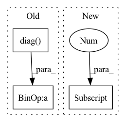

Pattern ID :36112
Before Change
D = pre_dist_mat[bi]**2
M = D[:1, :] + D[:, :1] - D
u,s,v = torch.svd_lowrank(M/2)
preds_3d.append( (u@ torch.diag( s) .sqrt())[:, :3].t() )
return torch.stack(preds_3d, dim=0), torch.zeros_like(torch.stack(his, dim=0))
else:
if verbose:After Change
svds = [torch.svd_lowrank(mi) for mi in M]
u = torch.stack([svd[0] for svd in svds], dim=0)
s = torch.stack([svd[1] for svd in svds], dim=0)
v = torch.stack([svd[2] for svd in svds], dim=0)
preds_3d = torch.transpose( torch.bmm(u, torch.diag_embed(s).sqrt())[..., :3], -1, -2)
return preds_3d, torch.zeros_like(torch.stack(his, dim=0))In pattern: SUPERPATTERN
Frequency: 3
Non-data size: 3
Instances Fragment ID: 102432793
Project Name: lucidrains/alphafold2
Commit Name: c3e564efd689bff4df9759b2855bdbb6dcd1b67b
Time: 2021-04-25
Author: ericalcaide1@gmail.com
File Name: alphafold2_pytorch/utils.py
M Class Name: AnonimousClass
N Class Name: AnonimousClass
M Method Name: mds_torch(6)
N Method Name: mds_torch(6)
M Parent Class:
N Parent Class:
M File Name: alphafold2_pytorch/utils.py
N File Name: alphafold2_pytorch/utils.py
M Start Line: 650
M End Line: 668
N Start Line: 645
N End Line: 671
Before Change
np.diag(1 / np.sqrt(self.Bs[1]))
@ self.R_12.T
@ np.diag(1 / self.Bs[0])
@ self.R_12
@ np.diag( 1 / np.sqrt(self.Bs[1]))
)
return M, None
def _multi_view_evp(self, Us, Ss):After Change
def _two_view_evp(self, views):
R = [pca.transform(view) for pca, view in zip(self.principal_components, views)]
C = R[1].T @ R[0] @ R[0] .T @ R[1]
return C, None
def _multi_view_evp(self, views): Fragment ID: 102432809
Project Name: jameschapman19/cca_zoo
Commit Name: a1ba93b137f04fbe46e9c284d5c1e8c4df56ba94
Time: 2022-10-10
Author: james.chapman.19@ucl.ac.uk
File Name: cca_zoo/models/_rcca.py
M Class Name: rCCA
N Class Name: rCCA
M Method Name: _two_view_evp(2)
N Method Name: _two_view_evp(3)
M Parent Class: _BaseCCA
N Parent Class: _BaseCCA
M File Name: cca_zoo/models/_rcca.py
N File Name: cca_zoo/models/_rcca.py
M Start Line: 137
M End Line: 147
N Start Line: 136
N End Line: 138
Before Change
rowsum = adj.sum(1)
d_inv = torch.pow(rowsum, order).flatten()
d_inv[torch.isinf(d_inv)] = 0.
d_mat_inv = torch.diag( d_inv)
adj = d_mat_inv @ adj @ d_mat_inv
return adj
After Change
d_inv[torch.isinf(d_inv)] = 0.
self_loop_idx = torch.stack((
torch.arange(adj.shape[0] , device=adj.device),
torch.arange(adj.shape[0], device=adj.device)
))
self_loop_val = torch.ones_like(self_loop_idx[0], dtype=adj.dtype) Fragment ID: 102432799
Project Name: thudm/grb
Commit Name: c89e21076dc05d1edb87dfe2eff20c29ba6bd0c1
Time: 2021-12-04
Author: geisler@in.tum.de
File Name: grb/utils/normalize.py
M Class Name: AnonimousClass
N Class Name: AnonimousClass
M Method Name: GCNAdjNorm(2)
N Method Name: GCNAdjNorm(2)
M Parent Class:
N Parent Class:
M File Name: grb/utils/normalize.py
N File Name: grb/utils/normalize.py
M Start Line: 37
M End Line: 42
N Start Line: 37
N End Line: 49